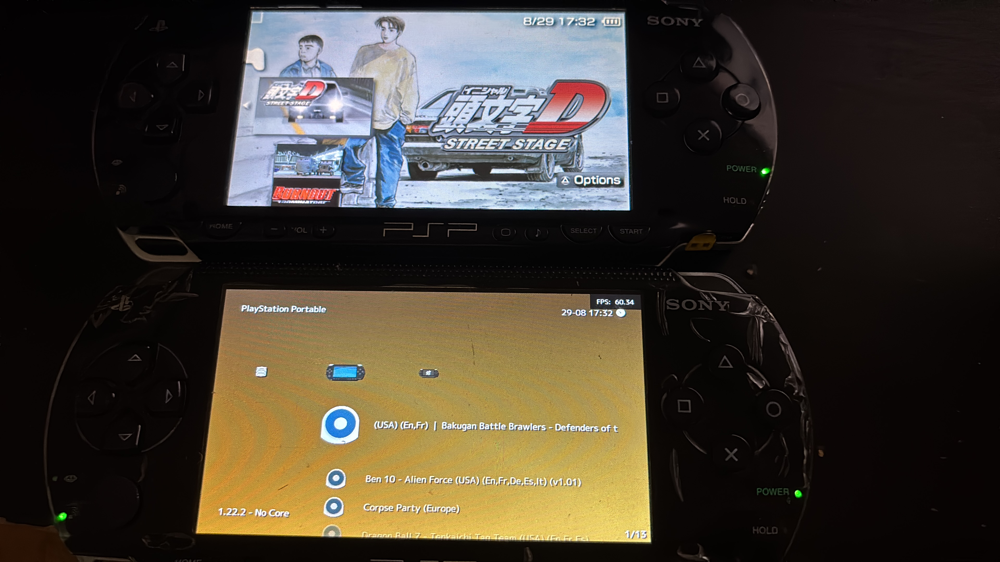
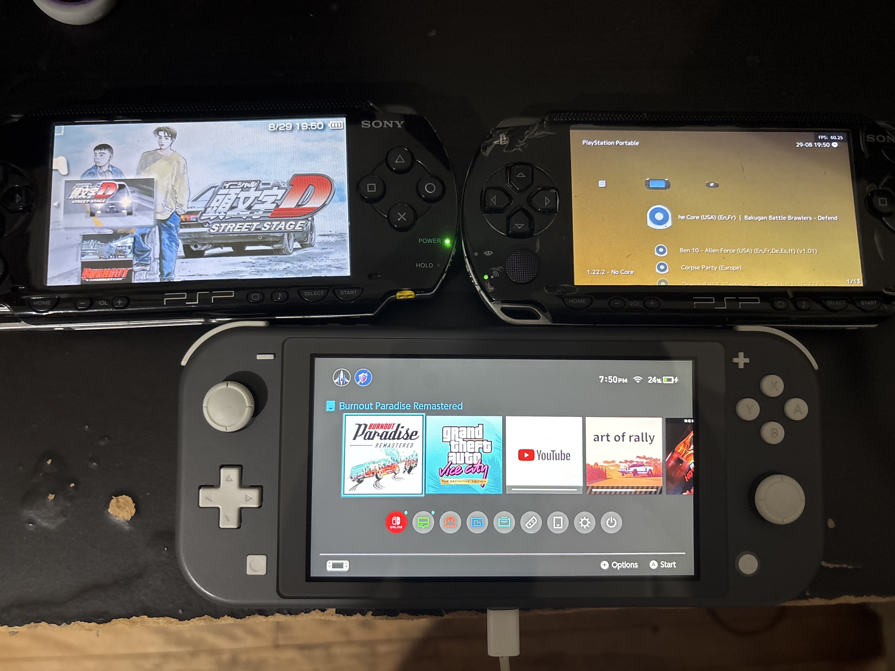
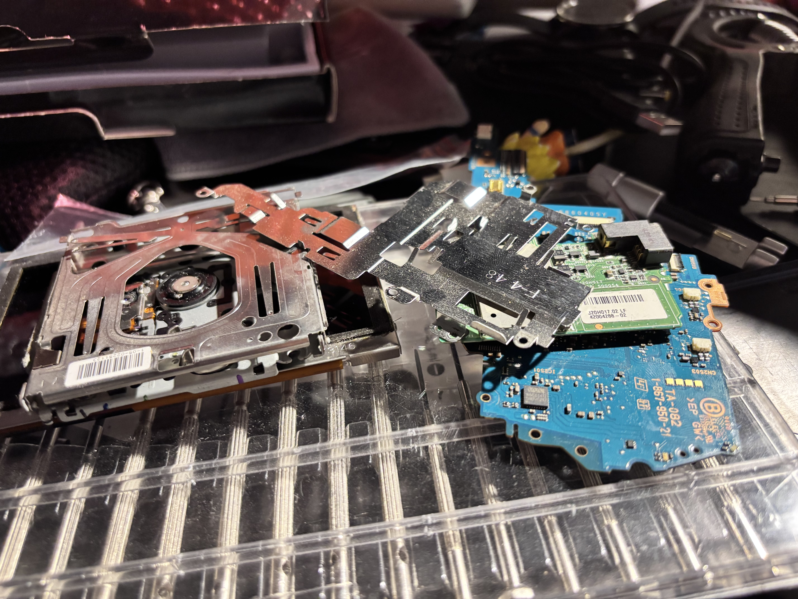
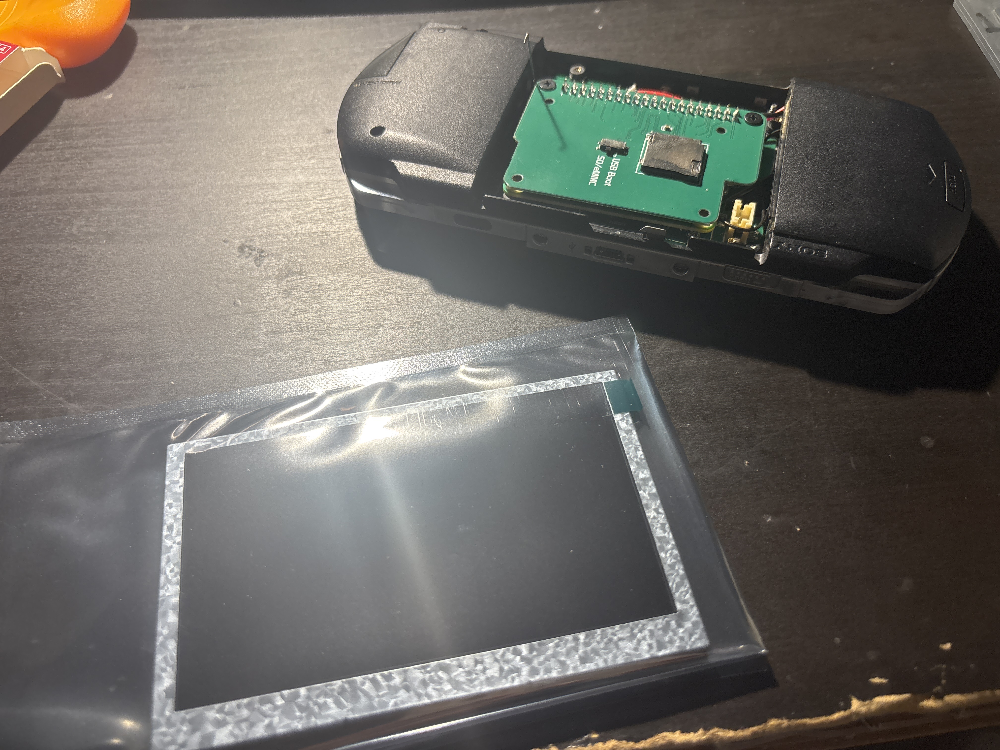
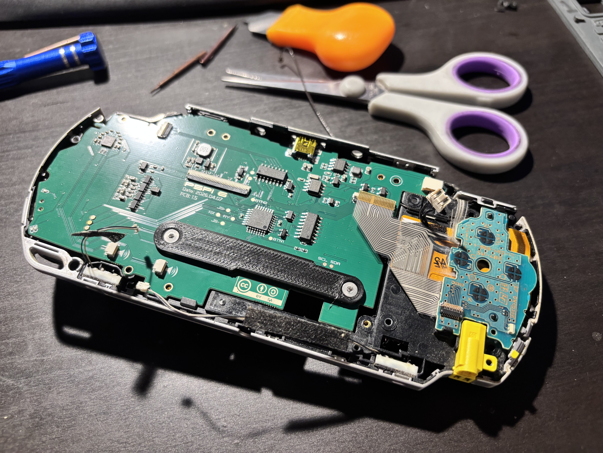
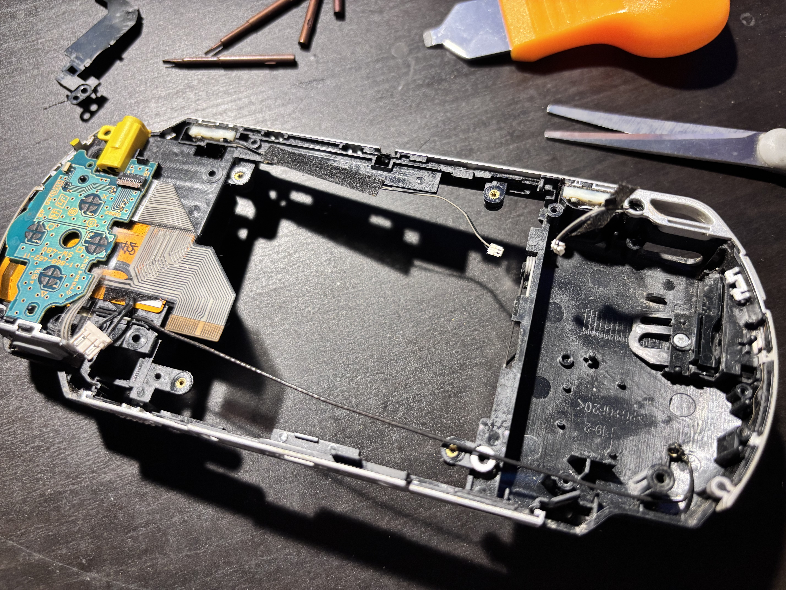
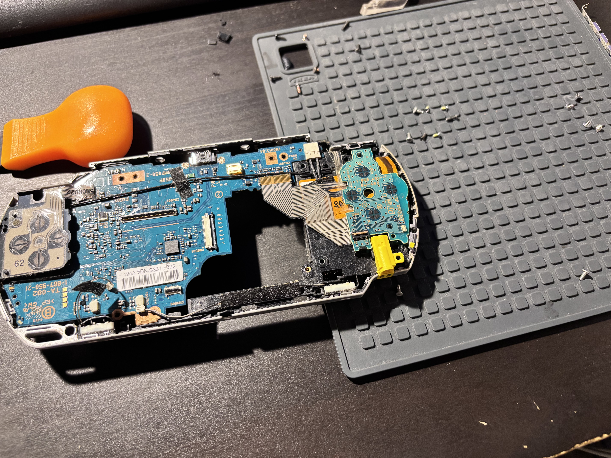
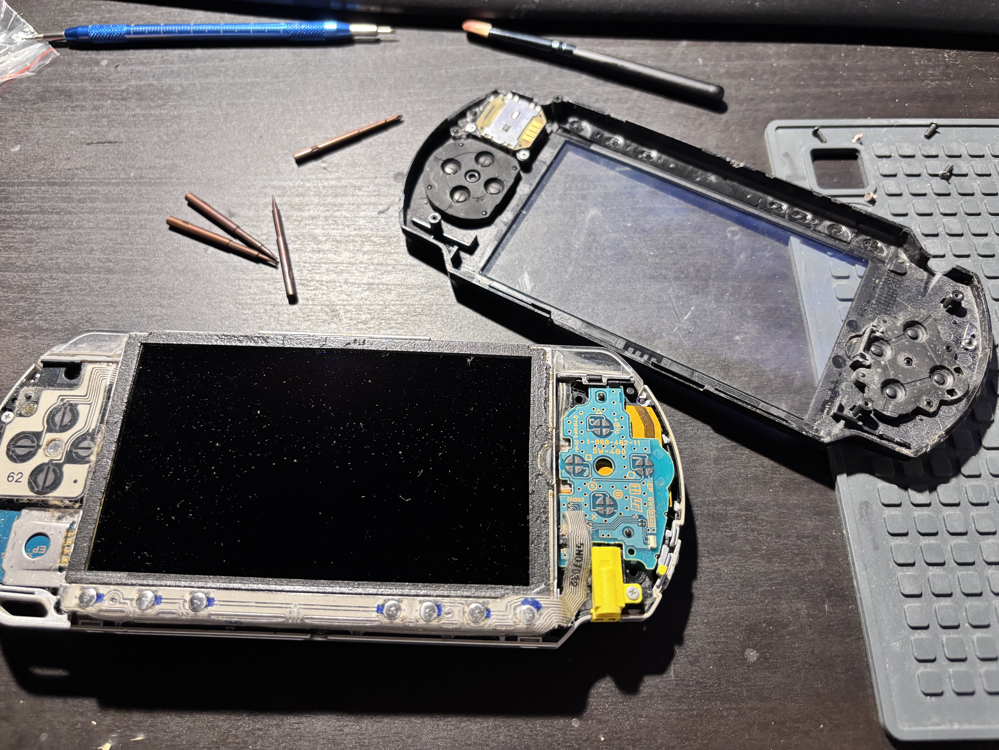

PSPi 6
A project that repurposes a PSP to instead house and run a Raspberry Pi CM4 (Compute Module 4). The guy who originally worked on and created this is othermod. Here's his Github and Youtube if you happen to want to check him out yourself.
The project has you gut an existing PSP until only its bare shell and a couple of other things remain, such as wifi antenna and D Pad PCB and membrane. You then slot in othermod's custom main board and headphone board. Which then allows you to slot in a Raspberry Pi carrier board which in turn allows you to place a CM4 (Compute Module 4).2nd September 2026
- Community Mods
While the PSPi6 itself may be finished, it seems I'm not quite done tinkering with it further. As it turns out, on othermods Github wiki, theres a community mods section.
As I was looking through I found a few curious mods, one of them being an active cooling system that fits within the available space in the psp shell. Another being a dual battery
handgrip that would clip onto the back. Since I didn't feel too comfortable with placing copper sheets and an aluminium heat sink so close to the CM4, I figured why not try an apporach
that combines both projects? The idea being an active cooling handgrip, with the dual battery instead being used to power a fan installed within the exterior handgrip.
Link to the community mods page and cad file if your interested:
30th August 2026
This project could be said to be done now. Since the last update all of the parts had arrived with the display being the last one. So I found it best to start the dissasembly
process along with fitting the parts that I could before the display arrived. After all was said and done, I have to say it was a lot easier than I expected. Though there
still were some hiccups, one of which being that I damaged the UMD bay door due to my clumsiness in seperating it from the body. But other than that, the whole process was
more or less seamless, going from removing the original PSP internals to replacing them with othermod's custom PCB and the Raspberry Compute Module. While this is a question
that I probably should have asked before trying to do this project, what's the use case here?
To try finding an answer, I more or less used 2 different types of OS's. One being a dedicated game emulator and the other being a general purpose OS. On the dedicated game
emulator side I tried a specific retropie image made for the PSPi6 and the same type of image but for Lakka. Both have very different aesthetics with Lakka going for much more
of an original PSP vibe with retropie being more of its own thing. On the other hand I've tried a PSPi6 specific image of Raspberry Pi OS. With regards to game emulation, from testing
the CM4 seems to struggle overall with PSP game emulation, but any older systems title's are handled well enough. I haven't been able to gether any granular data or put together any graphs.
But overall the CM4 would struggle to get about 30fps on many of the games I tested. On the other hand, Raspberry Pi OS works very well. Especially when paired up with a
bluetooth keyboard. Now I wonder if I could get video output to work somehow... 👀
Heres some pictures I took while I dissasembled and put together the new internals.








7th August 2026
Rather surprisingly the Raspberry Pi CM4 I ordered already arrived. They did say it'll arrive on the 10th at the very least, but you won't see me complaining about it coming earlier than expected. Nicely done Newark. I have also been notified that the battery is also arriving tomorrow. This will be updated when more components arrive or if something more urgent comes up regarding this project. So until then, I can do nothing but to simply sit and twiddle my thumbs while I wait for all of my components to arrive. I anticipate that othermod's custom PCB's will likely take the longest to arrive by some margin. Going by the shipping estimates while I was purchasing them, I foresee them taking about a month at least...
5th August 2026
All required parts have been ordered. The battery that othermod suggested was out of stock, so I instead went for a very similar and well rated battery on Amazon. Plus side is it'll arrive rather quickly.